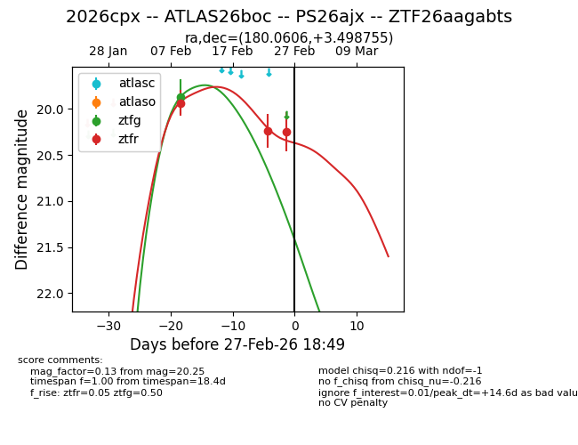
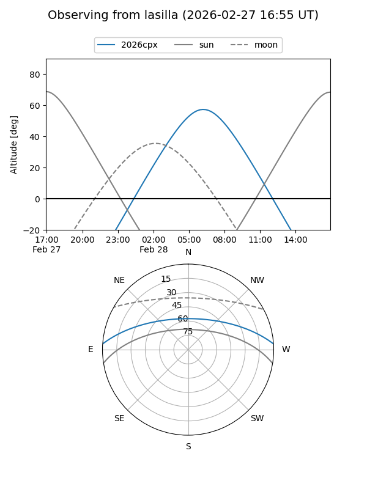
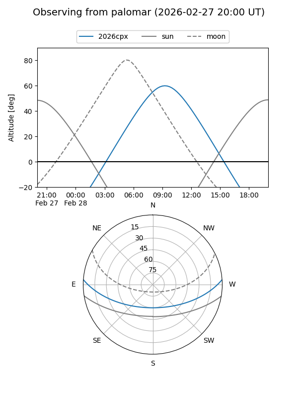
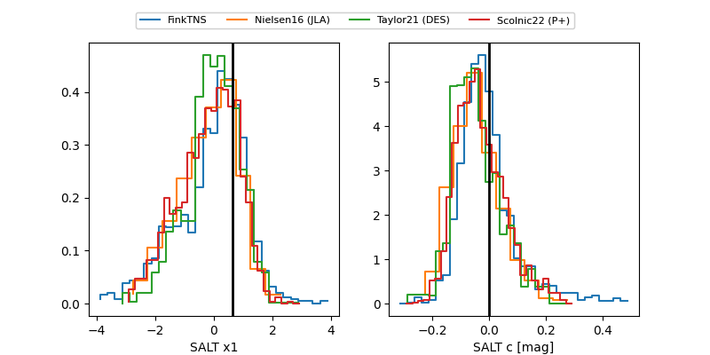

2026cpx
Target 2026cpx at 2026-02-27 18:51
Aliases and brokers:
FINK: link
Lasair: link
ALeRCE: link
TNS: link
YSE: link
alt names
ZTF26aagabts (ztf,fink_ztf)
2026cpx (tns,yse)
ATLAS26boc (atlas)
PS26ajx (panstarrs)
Coordinates:
equatorial (ra, dec) = 180.0606,+3.49875
equatorial (HMS+DMS) = 12:00:14.55,+03:29:55.52
galactic (l, b) = (273.3495,+63.39113)
Flags:
Photometry:
last ztfg=19.87, ztfr=20.25
1 ztfg, 3 ztfr detections
Lightcurve

Visibility


Additional plots
